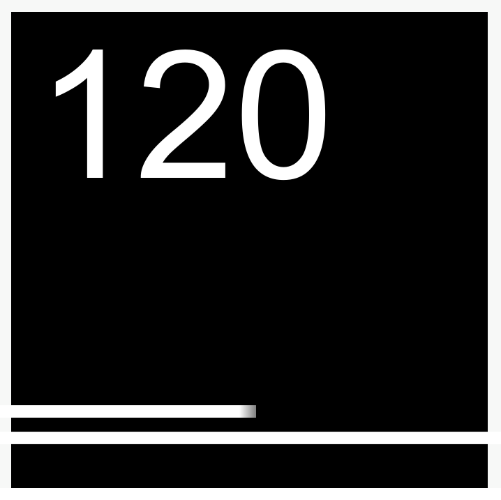

Привет! Это я, Artem (Артем). Я чувак из России, программист, геймер. Я делаю игры, страницы и т.д.
Играю в основном в Scrap 2. Статистика в Scrap 2: x105 Звезд, 4B+ ЗМ. (На момент 2 Марта 2025)
Вики-страница игры: Scrap 2 Вики
Создание игр.

Текущий проект: Endless
Версия: v0.1.0.0